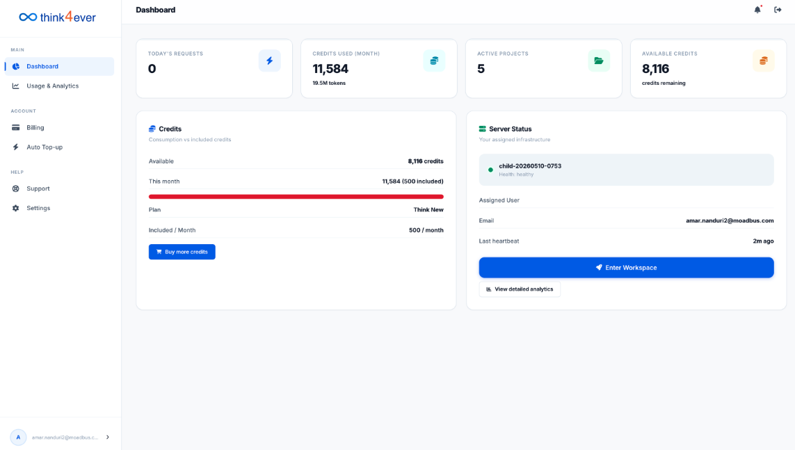
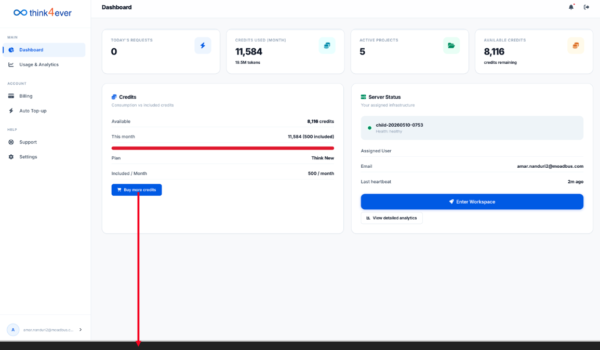
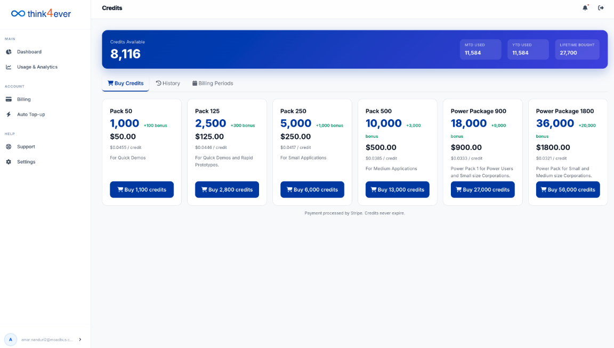
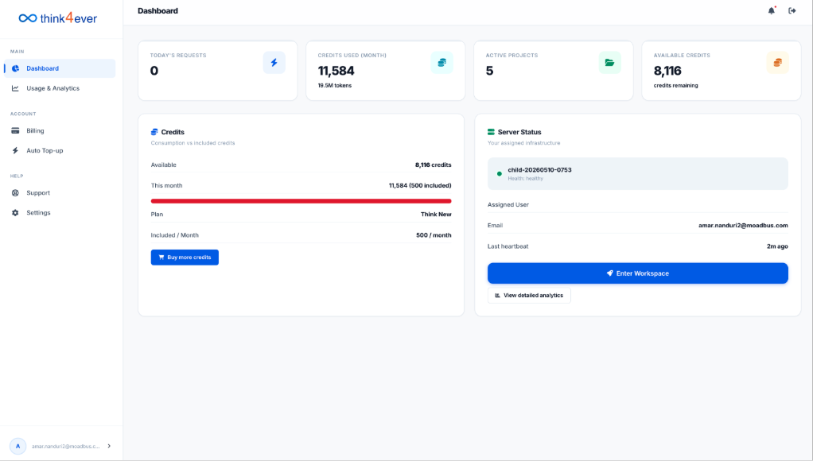
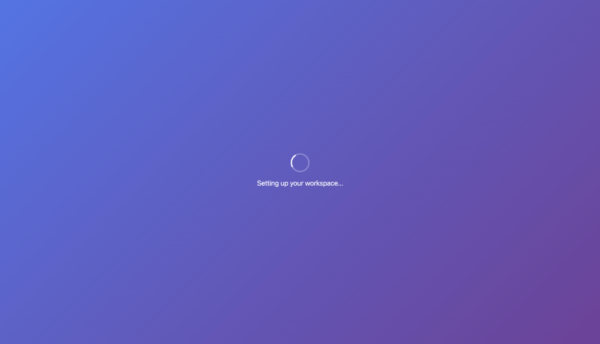

Dashboard
The Dashboard serves as your central control hub for monitoring platform resource consumption, tracking active builds, and accessing your agent workspaces.

Metrics Bar
This section gives you an at-a-glance overview of your current usage data and active projects:
- Today's Requests: Displays the count of AI agent actions processed during the current calendar day.
- Credits Used (Month): Shows your cumulative credit consumption for the current billing cycle, along with the corresponding equivalent token volume (e.g., 19.5M tokens).
- Active Projects: Indicates the total number of live development workspaces currently configured on your account.
- Available Credits: Shows your total remaining credit balance across your account.
Credits Breakdown Section
This card provides a detailed look at your subscription plan allowances and consumption vs. included credits:
- Available: Your absolute remaining credits ready for allocation.
- This Month: Tracks your usage for the current billing cycle against your baseline. A red visual progress bar indicates high resource consumption relative to your base plan.
- Plan: Displays your current active subscription tier (e.g., Think New).
- Included / Month: The standard baseline credit allocation assigned to your specific plan tier each month.
- Buy More Credits: Click this blue button to immediately add individual top-up credits to your balance without changing your base tier plan.
Server Status & Workspace Access
This card lets you track your underlying infrastructure status and directly access your agent pipelines:
- Infrastructure ID: : Displays your active background server cluster identifier (e.g., child-20260510-0753) along with an immediate operational status tag (e.g., Health: healthy).
- Assigned User: Shows the primary registered administrator email address managing the server node.
- Last Heartbeat: Tracks the exact time elapsed since the server last communicated and verified its active status with the platform (e.g., 2m ago).
- Enter Workspace: Click this large blue button to jump straight into your end-to-end SDLC pipeline, agent configurations, and deployment settings.
- View Detailed Analytics: Click this button to review granular, time-series data charts regarding your infrastructure usage and token distributions over time.
Buy More Credits
Tapping the Buy more credits button will display a list of available credit packages for purchase.


Enter Workspace
User will be taken to Think4ever Dev site where projects can be created and managed.

